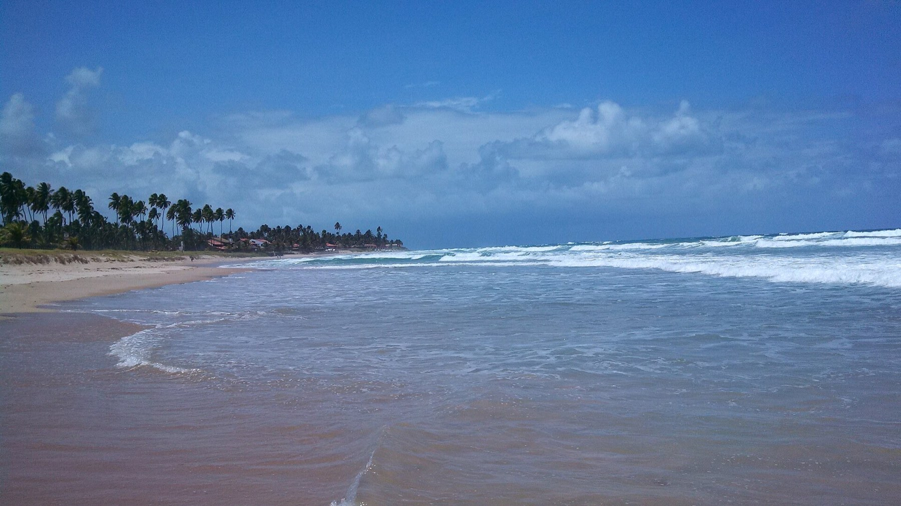
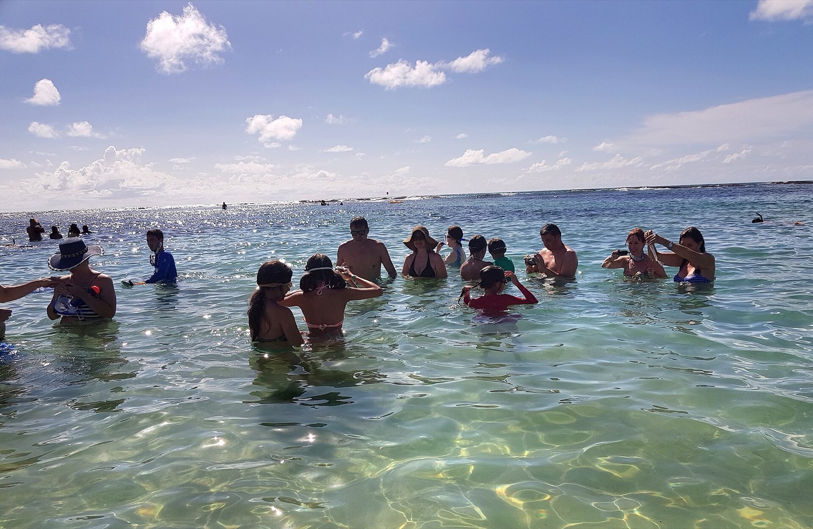

Proposta em construção · Ipojuca
Porto Geek Experience
Games, cultura geek e tecnologia conectados ao futuro do turismo de Porto de Galinhas.
Uma proposta de evento gratuito que une entretenimento, experiências imersivas e valorização dos atrativos turísticos de Ipojuca.
- 2 dias de experiência
- Evento gratuito
- Games, cosplay e realidade virtual
- Turismo e inovação

Uma nova forma de viver, descobrir e promover Porto de Galinhas.
A experiência
Muito além dos games.
A Porto Geek Experience nasce com a proposta de unir o universo gamer à riqueza turística de Porto de Galinhas, criando uma experiência capaz de atrair diferentes públicos e apresentar o destino por novas perspectivas.
-
Game Arena
Uma área interativa com computadores e consoles para partidas, desafios e atividades de entretenimento.
-
Concurso de Cosplay
Um espaço para criatividade, expressão cultural e participação da comunidade geek.
-
VR Experience
Uma experiência de realidade virtual com vídeos em 360° que permitem explorar paisagens e atrativos turísticos de Porto de Galinhas e Ipojuca de forma imersiva.
Turismo
Tecnologia para aproximar pessoas do destino.
A inovação é o elo entre o entretenimento e a promoção turística. Com experiências imersivas, o público poderá descobrir paisagens, conhecer atrativos e despertar o interesse por novas experiências em Porto de Galinhas.

Divulgação do destino
A proposta também prevê a possibilidade de aproveitar os conteúdos audiovisuais produzidos em futuras ações de divulgação turística, feiras, hotéis e iniciativas de promoção do destino, conforme as autorizações e os direitos de uso aplicáveis.
Parcerias
Um destino. Muitas possibilidades de parceria.
A Porto Geek Experience foi pensada para aproximar o poder público, o setor turístico, as empresas de tecnologia e a comunidade local em torno de uma iniciativa comum.
-
01
Poder público
Articulação institucional e alinhamento com as prioridades do turismo.
-
02
Setor turístico
Hotéis, operadoras, passeios, restaurantes e empreendedores locais.
-
03
Tecnologia
Empresas de games, equipamentos, realidade virtual e soluções digitais.
-
04
Comunidade
Moradores, visitantes, criadores de conteúdo e público geek.
A proposta é identificar, em conjunto, o melhor caminho para viabilizar um projeto-piloto sustentável e com potencial de continuidade.
Potencial
Uma experiência com potencial para ir além do evento.
Estes são resultados pretendidos de um projeto-piloto — a serem acompanhados, e não prometidos de antemão.
-
Novas audiências
Aproximar o destino do público jovem e da comunidade gamer.
-
Valorização turística
Estimular o interesse pelos atrativos de Ipojuca.
-
Rede de parceiros
Fortalecer conexões entre poder público, turismo e tecnologia.
-
Promoção contínua
Explorar conteúdos imersivos em futuras ações turísticas.
-
Resultados mensuráveis
Acompanhar participação, experiências realizadas, parceiros envolvidos e percepção do público.
Próximo passo
Vamos construir essa experiência juntos?
Queremos apresentar a proposta, ouvir as prioridades da Secretaria de Turismo e identificar, em conjunto com os parceiros locais, o melhor formato para transformar essa ideia em uma experiência concreta para Porto de Galinhas.
Porto Geek Experience — inovação, entretenimento e turismo conectados a um destino extraordinário.